USD
USD EUR
EUR CAD
CADLa Calavera de Zapata
Catrinas de barro con alma michoacana, pintadas con corazón jalisciense
La muerte ronda por Capula y a su paso llena de vida, color y fiesta. Es en este mágico pueblo donde el Día de Muertos no solo es una tradición, sino el corazón de una comunidad que vive y respira arte.
En La Calavera de Zapata sabemos que lo que se hace en México, está bien hecho. Nacimos del amor por el arte mexicano, por la transición de la vida a la muerte y por el deseo de que nuestras tradiciones prevalezcan. A través de nuestras catrinas , transmitimos color, alegría y un profundo respeto por nuestra cultura.
Ver Nuestra Colección de Catrinas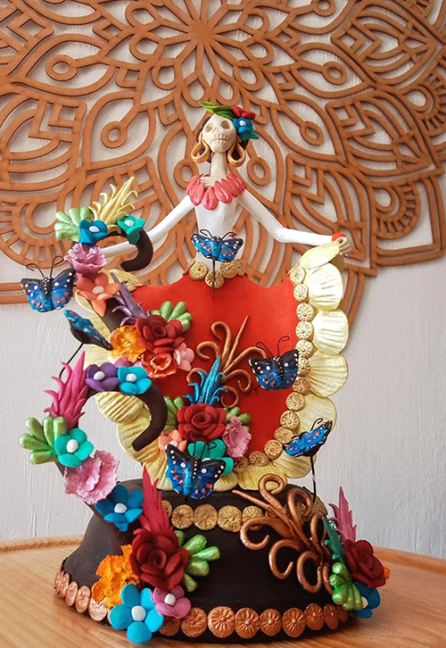
Nuestra Historia
Tradición y Arte Mexicano
La Calavera de Zapata nace en Capula, Michoacán, un pueblo reconocido mundialmente por su tradición alfarera y por ser la cuna de las emblemáticas catrinas de barro. Es aquí, entre hornos de leña y manos llenas de historia, donde cada pieza cobra vida. Nuestra marca surge por el gusto y la afición a la transición entre la vida y la muerte, y por el amor al arte popular mexicano. Lo que comenzó como una visión en noviembre de 2022, pronto tomó forma y para el 2023 se consolidó como una marca registrada, un paso que nos permitió compartir oficialmente nuestra pasión con el mundo. Ese mismo año, tuvimos el honor de ser parte de nuestra primera exposición, un hito que marcó el inicio de un camino lleno de color y tradición.
Cada artesanía que llevamos a tus manos es elaborada con procesos tradicionales, con una historia, una intención y el afecto de quienes la crean. En cada catrina hay un pedazo de Capula, de su gente y de una tradición que se niega a desaparecer.
Artisanos de Capula trabajando el barro con técnicas ancestrales
Misión
Transmitir a través de nuestras artesanías el amor por nuestras tradiciones, ofreciendo piezas que llenen cada espacio de color, vida y alegría.
Visión
Ser una marca reconocida a nivel nacional e internacional por preservar y difundir la tradición de la catrina, manteniendo viva la esencia de Capula y llevando a cada hogar una pieza única.
Valores
*Calidad
*Identidad mexicana
*Arte y cultura
*Compromiso
Exposiciones y Eventos
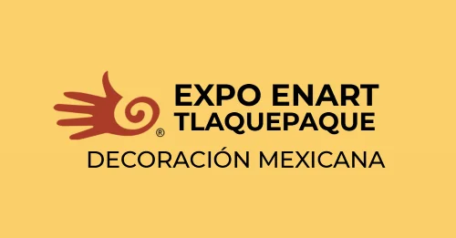
Enart centro cultural del refugio
Próximamente
Estaremos presentes en la feria especializada en artesanía mexicana, decoración y regalos más importante de México y América Latina.
Expo tlaqueparte
4-7 Junio 2026
Participación en la Expo Tlaqueparte, la cual es considerada una de las más grandes e importantes de México, debido a que asisten expositores de diferentes partes del mundo.
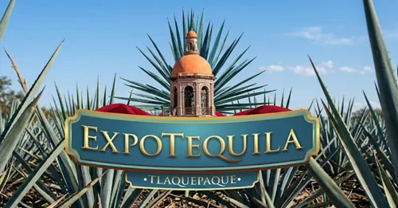
Expo tequila
Proximamente
Regresamos una vez más a este evento anual enfocado en la promoción de la cultura tequilera y destilados de agave.
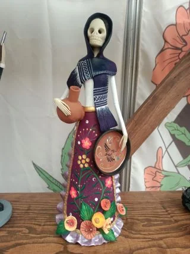
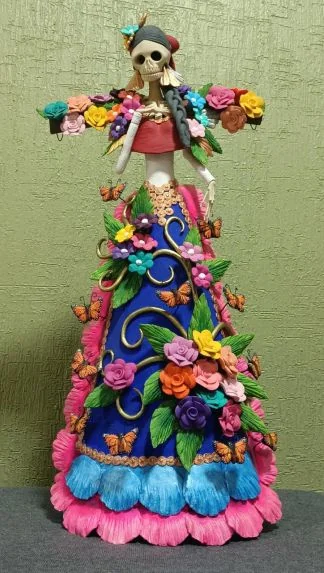
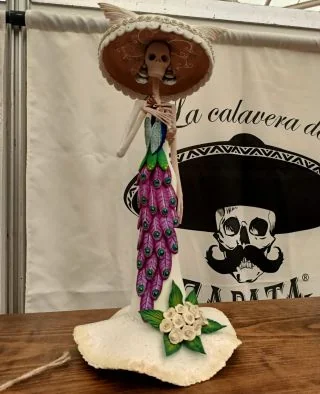
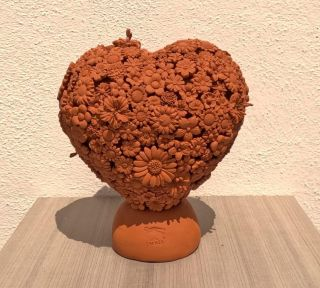
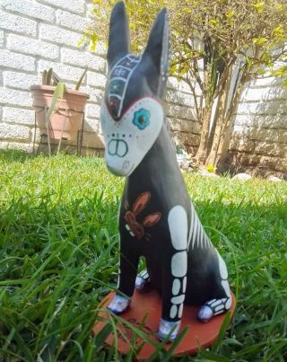
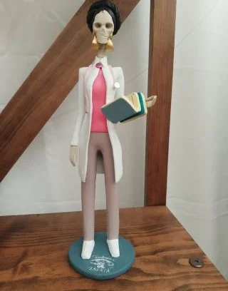
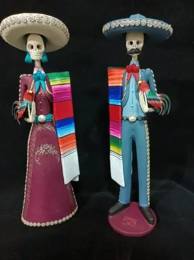
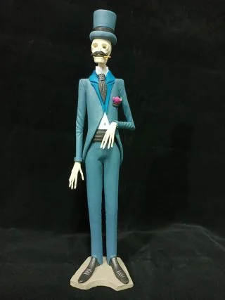
Contáctanos
Información de Contacto
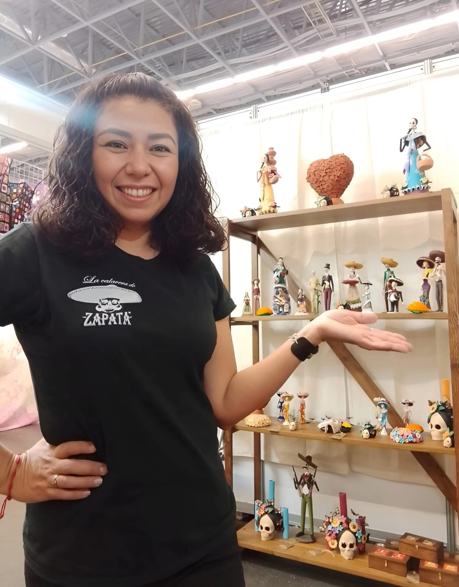
lacalaveradezapata@hotmail.com
523313668175
Capula, Michoacán, México
Lunes a Viernes: 9:00 - 18:00
Sábados: 10:00 - 14:00